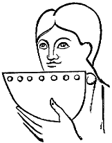
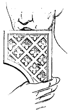

Eugène VIOLLET le DUC
Dictionnaire raisonné du mobilier.FRETEL, s. m. (frestel, fresteal, sistre). Flûte de Pan. Cet instrument, bien connu de l'antiquité, se compose, comme on sait, d'un certain nombre de tuyaux (roseaux) de différentes longueurs, assemblés les uns à côté des autres, et donnant plusieurs notes lorsque l'exécutant souffle obliquement dans chacun d'eux.

Figure 1Cet instrument fut également usité pendant le moyen âge, et faisait sa partie dans les concerts. Au XIe siècle, on le voit représenté dans l'antiphonaire provenant de l'abbaye Saint-Martial de Limoges1 (fig. 1). Les sept tuyaux qui forment l'octave sont enveloppés dans une chape ; l'auteur du dessin a indiqué les sept trous des tuyaux, seuls ouverts pour recevoir le souffle de l'exécutant. Ce instrument est souvent mentionné dans les romans des XIIe et XIIIe siècles, comme employé simultanément avec d'autres.
On le voit représenté sur le chapiteau de Saint-Georges de Boscherville (XIIe siècle) (fig. 2). Ici le frétel, parfaitement indiqué, est de forme triangulaire, et les chalumeaux sont enveloppés d'un treillis décoré. Mais, à dater du XIVe siècle, le frétel semble relégué aux champs d'où il était sorti, et les miniaturistes ne le mettent plus qu'aux mains des pasteurs, des paysans.

Figure 2
Note :
(1) Biblioth. impér. latin, no 1118.